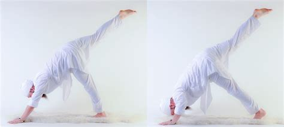
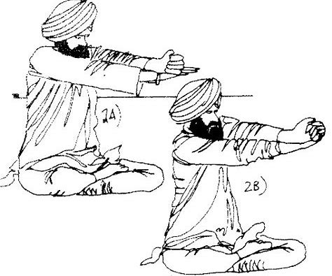
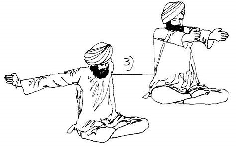

Esta kriya se compone de 3 ejercicios, para fortalecer y pulir el aura
Desde la posicion ejemplificada en la imagen, estirar y doblar los brazos durante 1:30 min, con la pierna derecha al aire. Posteriormente repetir con la pierna izquierda al aire
Entrelaza los brazos como viene en la imagen y sube y baja los mismos durante 2 min
Acerca los brazos en el frente del pecho, abrelos y acercalos a la espalda, segun la imagen
